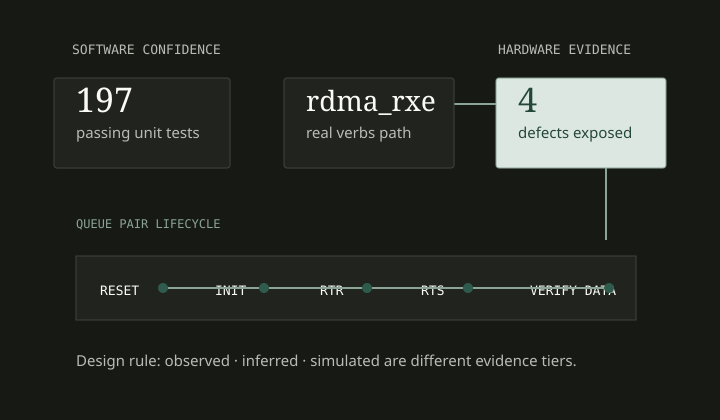
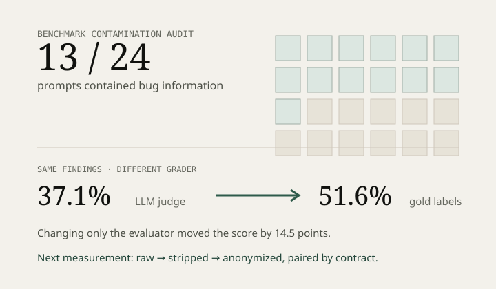
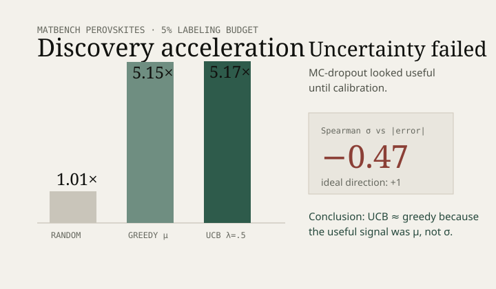
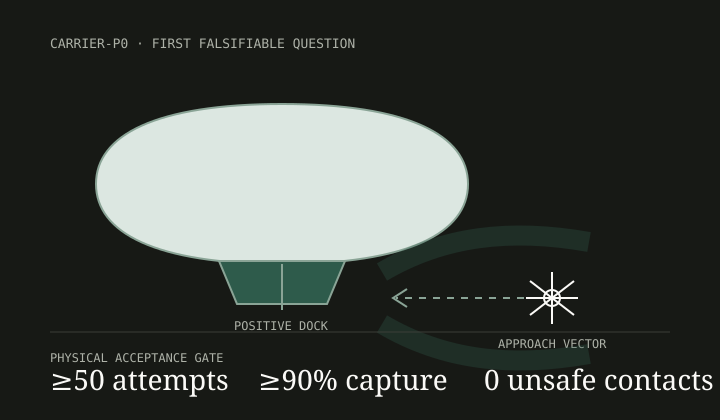

roce-preflight
RDMA/RoCE diagnostics that distinguish observed hardware state from analysis and simulation.
Real RDMA execution exposed four defects missed by 197 passing unit tests.
Reliable AI, high-performance networking, scientific ML, autonomous systems, and security-critical infrastructure—with an emphasis on the failure modes that abstractions hide.
BRIDGE-bench now treats its original score as contaminated evidence after a prompt audit found severe author-injected leakage in 13 of 24 contracts. The zero-cost work is measurement design, sanitizer invariants, and matched controls—not inventing a rerun result.
Aiur CARRIER-P0 deletes hydrogen, swarms, charging, outdoor autonomy, and airborne compute until one risky interaction remains: repeated mechanically verified recovery of a micro-UAV.
The projects look different. The recurring question is the same: what evidence would reveal that the abstraction is lying?

RDMA/RoCE diagnostics that distinguish observed hardware state from analysis and simulation.

A security-capability benchmark whose most useful result was discovering flaws in its own measurement design.

Pretrained materials models, active screening, uncertainty calibration, and reusable MatGL infrastructure.

A persistent airborne-carrier concept reduced to the smallest prototype that can falsify its recovery architecture.
Accepted code in projects I do not control is kept separate from founder/product work because it is a different kind of evidence.
A local patch asks whether I can make it work. Upstream asks what downstream callers may safely assume after it lands.
The writing is organized around ideas, not repositories: measurement validity, systems boundaries, inference semantics, protocol correctness, and how to prototype ambitious hardware without lying to yourself.
How provenance comments turned a capability evaluation into a partial metadata-recognition test.
Where software confidence ended and independent RDMA state began.
A useful mean prediction attached to an uncertainty signal that failed calibration.
What eight merged third-party patches changed about the unit of correctness.
ML systems, Rust semantics, compatibility, security invariants, autonomy, and the publication standard behind the work.